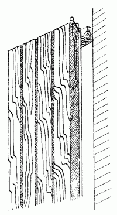
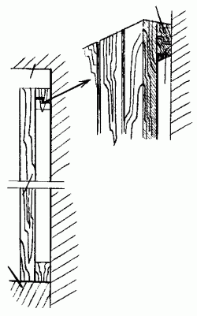

Отделка стен древесиной и имитирующими ее материалами.

Древесина в качестве отделочного материала известна с незапамятных времен, но она не утратила своей популярности и в наши дни. Облицованные деревом стены придают интерьеру ощущение уюта и особого тепла, прекрасно гармонируют с мебелью, даже если она изготовлена в ультрасовременном стиле.
Помимо этого, облицованные древесиной стены защищают помещение от шума, скрывают неровности стен, а служат достаточно долго и обновляются без применения особых усилий. Использование древесины, например, для изготовления стеновых панелей вполне оправданно: стена, облицованная таким образом, по крайней мере 10–15 лет не будет нуждаться в ремонте. Кроме того, отделка из древесных материалов защищает поверхность стены от различных повреждений, а особое покрытие на панелях позволит в дальнейшем применять влажную уборку.
В жилых комнатах можно облицевать древесиной только часть стены, например в виде панелей, а коридор и прихожую полностью оформить отделкой из этого материала. Кроме того, в прихожей, где для отделки используется древесина, можно выполнить не только облицовку стен, но также и включить в интерьер мебель, сделанную из древесины того же оттенка, изготовить деревянную вешалку для одежды, полку для телефона и пр. Ведущую из прихожей в жилую комнату дверь также можно облицевать панелями или рейками из древесных материалов.
Для облицовки стен можно использовать тонкие доски, плоские или рельефные, или же длинные, на всю высоту стены, рейки. Для тех же целей нередко применяется и широко распространенная сейчас вагонка, представляющая собой рейки с выбранными с двух сторон четвертями. Главное их достоинство заключается в том, что стыковка происходит по двум взаимодополняющим четвертям, благодаря чему рейки не требуется подгонять друг к другу.
В гостиной для расположения орнаментальной панели лучше всего использовать стену без проемов. Желательно, чтобы эту стену не загораживала высокая мебель. Мягкий уголок – отличное решение проблемы. Если планируется облицевать панелями стены в спальне, то лучше всего сделать это только на половину высоты стены. А сплошную деревянную облицовку можно применить в комнате для детей-школьников, особенно в том месте стены, где находится письменный стол.
Для облицовки стен в доме требуется древесина таких декоративных пород деревьев, как, например, липа, береза, ясень, клен и др. Для отделки стен кухни и одновременно столовой можно использовать срезы древесины толщиной 20–30 мм. При желании можно облицевать таким образом только одну стену, а другие – пластиковыми панелями с имитацией под дерево.
Древесина для облицовки должна быть соответствующим образом подготовлена. Перед ее использованием нужно убедиться в том, что с момента обработки прошло не менее полугода; этот срок необходим для снятия внутреннего напряжения материала, в противном случае новое стеновое покрытие может покоробиться и местами покрыться трещинами.
Облицовывать древесиной можно любые несущие конструкции. Но только с деревянными стенами работать гораздо быстрее и проще. В этом случае нужно просто за-бивать гвозди в лицевую поверхность подготовленного материала, следя за тем, чтобы их шляпки возвышались над поверхностью примерно на 4–5 мм.
После этого шляпки гвоздей удаляют кусачками и забивают гвозди полностью, или заподлицо, как говорят строители.
Для облицовки бетонных или кирпичных поверхно-стей нужно закрепить на их поверхности деревянные бруски сечением 30 х 50 мм, к которым потом крепится облицовочный материал. Сами бруски удерживаются на стене с помощью установленных в ней деревянных пробок под шурупы (рис. 34).

Рис. 34. Монтаж панелей из древесины на деревянные бруски.
При вертикальном расположении досок бруски закрепляют на стене горизонтально, и наоборот: если доски будут установлены горизонтально, то бруски крепятся вертикально.
Можно предложить быстрый и вместе с тем несложный способ облицовки стен с помощью щитов. Для этого изготавливаются щиты из досок, предназначенных для отделки стен. Длина одного такого щита должна быть равна высоте отделываемой поверхности, а ширина – 900—1000 мм.
Следует установить на стене каркас, выполненный из брусков в форме буквы Г. Эти бруски прикрепляются к пробкам с помощью шурупов (рис. 35).

Рис. 35. Монтаж панелей из древесины на Г-образный каркас.
Швы между щитами можно перекрыть с помощью Т-образного профиля, который также крепится к брускам с помощью шурупов. В этом случае по мере необходимости можно снимать щитки и впоследствии устанавливать их снова.
Однако, какой бы способ отделки стен древесиной вы ни выбрали, в любом случае необходимо обеспечить вентиляцию пространства, остающегося между облицовкой и стеной, для чего у потолка и пола нужно оставить небольшие, едва видимые глазу щели.
Что касается цветового решения интерьера, то в данном случае здесь имеется огромный выбор. Можно, например, применить панели из древесины естественного оттенка или окрашенные натуральными красителями в зеленый, коричневый или желтый цвет. Но какой бы цвет панелей ни был выбран, сверху их нужно покрыть бесцветным матовым лаком для дополнительной защиты от загрязнений. Масляные и водно-дисперсионные краски для этой цели не подходят, потому что они могут скрыть оригинальную текстуру панелей.
Если панели с течением времени все же стали выглядеть более тусклыми, на них появились загрязнения, то можно их обновить. С помощью цикли следует снять слой лака, обработать поверхность тонкой мелкозернистой шкуркой и снова покрыть ее лаком.